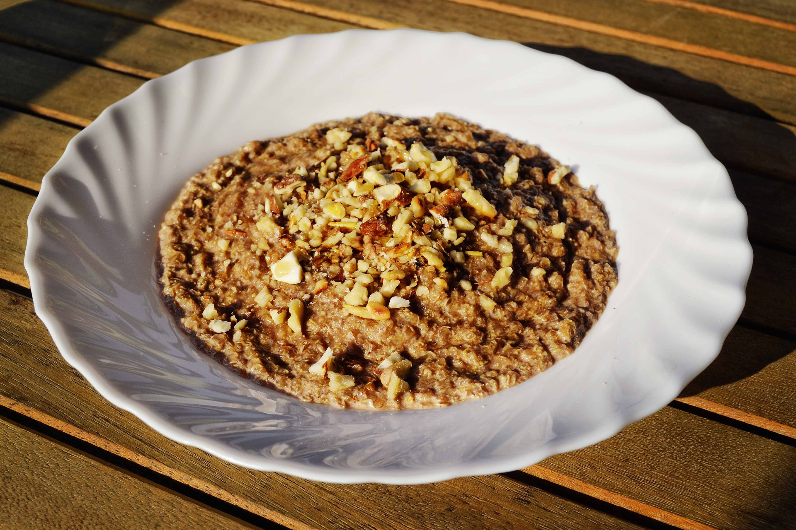
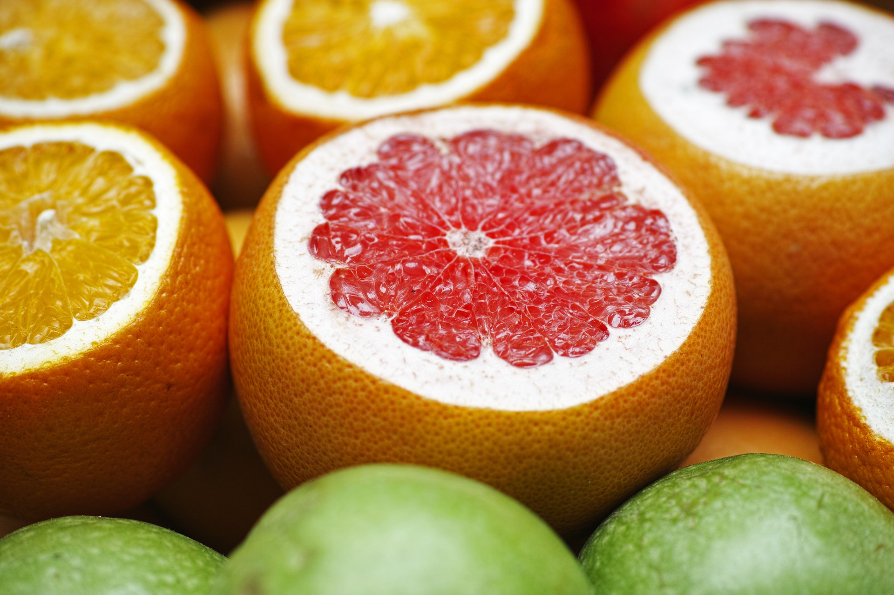
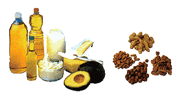
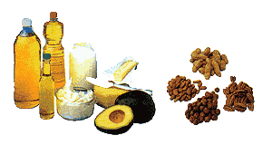

Alimentación Sana
Aprendamos a comer sano
La Pirámide Alimenticia
La Pirámide de Alimentos o Pirámide Alimenticia es una representación gráfica mediante la que se pretende clasificar los alimentos en función a nuestras necesidades nutricionales. .
Más informaciónLas frutas nos previenen las enfermedades
Las frutas y verduras son importantes debido a su alto contenido de agua y otras sustancias como vitaminas, minerales, fibra, antioxidantes necesarios para el funcionamiento del organismo.
Más información
Toma 8 vasos de agua la día
La Organización Mundial de la Salud (OMS) y numerosos especialistas en nutrición recomiendan beber entre 2 y 3 litros diarios (el equivalente a unos 8 vasos de agua). Sin embargo, cada edad y cada circunstancia requieren una determinada ingesta en función de factores como son la edad, sexo o la actividad física.
Más información
Los carbohidratos
También llamados hidratos decarbono, glúcidos o azúcares son lafuente más abundante y económicade energía alimentaria de nuestradieta. Están presentes tanto en losalimentos de origen animal como laleche y sus derivados como en los deorigen vegetal; legumbres, cereales,harinas, verduras y frutas. Sonsolubles en agua y se clasifican deacuerdo a la cantidad de carbonoso por el grupo funcional aldehído.


Las proteinass
Después del agua, la proteína es la sustancia más abundante en el cuerpo humano pues es el principal constituyente de todo tejido vivo. La proteína es uno de los elementos más importantes para el mantenimiento de la buena salud y vitalidad y es de primordial importancia en el crecimiento y desarrollo de todos los tejidos del cuerpo.
 

Las grasas
Las grasas o lípidos son la fuente más concentrada de energía en la dieta. Cuando son oxidadas, las grasas aportan más del doble de calorías por gramo que las proteínas o carbohidratos. Un gramo de grasa contiene 9 calorías mientras que las proteínas y carbohidratos sólo contienen 4 calorías.
Recomendaciones para tener una buena Alimentación
FRSES PARA REFLEXIONAR
“Aquellos que piensan que no tienen tiempo para una alimentación saludable tarde o temprano encontrarán tiempo para la enfermedad”
“Deje que los alimentos sean su medicina y que la medicina sea su alimento”